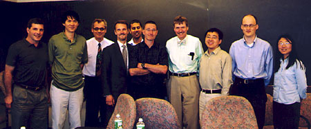

News Archives : 2004 : Merck Genome-Related Research Awards Announced
May 24, 2004
Four faculty and four postdoctoral fellows received research support in the second year of Merck's five-year gift to support genome-related research at Harvard. The gift provides funding for activities connected with research in genomics interpreted in the broadest sense, and applications are solicited from science departments in the Faculty of Arts and Sciences.
"These awards serve two purposes," continued Dr. Turner. First, they support great projects, and it's a nice way to celebrate the opening of the new Merck research center in Boston, to mark the fact that Merck is in town."
Richard Losick, Maria Moors Cabot Professor of Science and Harvard College Professor, who served as chair of the selection committee, welcomed the awardees, MCB faculty, and Merck representatives Lex Van der Ploeg, Vice President for Basic Research and Site Head, MRL-Boston, Robert Gould, Vice President for Licensing & External Research, MRL-Boston, and Dr. Turner.
"We are grateful for the investment that Merck is making in our research," he said before introducing each of the winners. "It's important for genomics-related research, not just for MCB, but interpreted broadly to include winners from four departments in the life sciences and physical sciences."
"I am delighted to receive the Merck award, says Venkatesh Murthy, one of the award recipients. "It will allow us to pursue an exciting new avenue of research on the role of transcription in a novel form of synaptic plasticity. We have previously studied this phenomenon using physiological and biophysical methods, and now, the generous Merck award will permit us to explore--using methods to quantify gene expression in single neurons--whether and how transcriptional regulation is involved."
Dr. Murthy also spoke to the importance of such funding: "Support from nonfederal sources, including corporate programs, is valuable for embarking on exciting new avenues of research that may not be attractive to federal sources."
During their visit to Harvard, Drs. Turner, Van der Ploeg, and Gould toured the Bauer Center for Genomics Research and met with Dr. Laura Garwin, Executive Director of the center.
| Postdoctoral Awards The one-year fellowships provide support to each postdoctoral fellow with more than two but less than five years of postdoc experience. Especially encouraged to apply are those whose work is interdisciplinary in the sense that their intellectual activities extend beyond their own laboratory. This year's awardees are: |
||||
| Hazen Babcock Zhuang Lab, Department of Chemistry and Chemical Biology "A novel method for sequencing DNA" |
 |
Jun-Yi Leu Murray Lab., Department of Molecular and Cellular Biology (MCB) "Experimental evolution and genomic analysis of mating preference in budding yeast" |
||
| Xiaoqui Liu Erikson Lab, MCB "Functional analysis of mammalian pololike kinase 1 (Plk1) and its interaction with mitotic kinesinlike protein (Mklp1)" |
Jing Yu McMahon Lab, MCB "Development of a conditional siRNA approach for functional genomics in mice" |
|||
Faculty Awards Four FAS faculty receive grants each year to support innovative new genomics-related research. This year's awardees are: |
||||
| Daniel Fisher Professor of Physics (Dept. of Physics and Applied Sciences) "Distributions of mutational and epistatic effects" |
Venkatesh Murthy Morris Kahn Associate Professor of Molecular and Cellular Biology (MCB) "Studying synaptic plasticity and gene expression at single-neuron resolution" |
|||
| Axel Nohturfft Assistant Professor of Molecular and Cellular Biology (MCB) "Regulation of lipid synthesis during phagocytosis-induced membrane biogenesis" |
Naomi Pierce Hessel Professor of Biology & Curator of Lepidoptera (Dept. of Organismic and Evolutionary Biology) "Three-way interactions among plants, pathogens, and herbivores: A genetic dissection of pathogen-mediated plant resistance to herbivores." |
|||
The awards selection committee, chaired by Richard Losick, Harvard College Professor and Maria Moors Cabot Professor of Biology, MCB, included: Greg Verdine, Harvard College Professor of Chemical Biology, Department of Chemistry and Chemical Biology; Tim Mitchison, Sabbagh Professor of Cell Biology at Harvard Medical School and Codirector, Institute of Chemistry and Cell Biology; Norbert Perrimon, Howard Hughes Medical Investigator and Professor of Genetics, Harvard Medical School; Stephen Friend, President, Rosetta Inpharmatics and Senior Vice President, Molecular Profiling and Basic Cancer Research, Merck & Co., Inc.; and Mervyn Turner, Merck & Co., Inc.

From left to right: Dan Fisher, Jun-Yi Leu, Lex Van der Ploeg of Merck Research Institute
(MRI)-Boston, Robert Gould of MRI-Boston, Venki Murthy,
Andy McMahon, Merv
Turner of Merck Research
Lab-Rahway, Xiaoqui Liu,
Hazen Babcock, Jing Yu